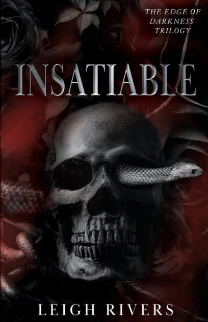
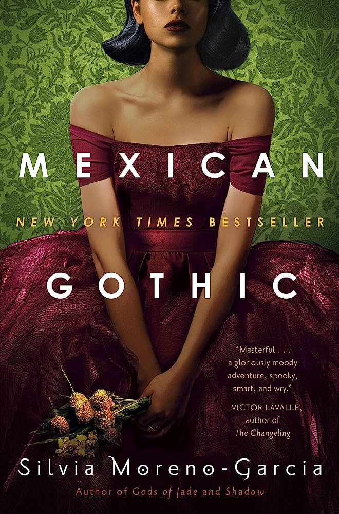
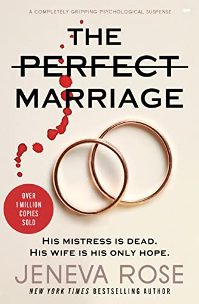
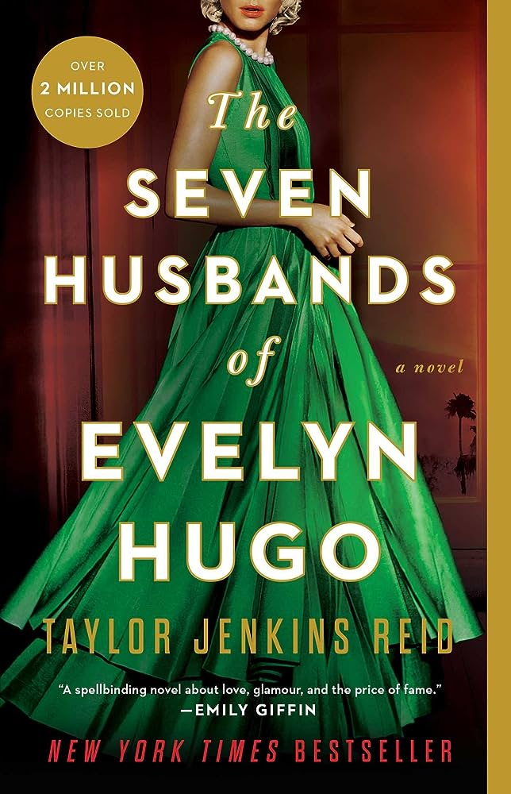

Book Recommendations

The Seven Husbands of Evelyn Hugo is a book about a news jorunalist who gets the opporunity to cover the story of the infamous Hollywood icon, Evenyln Hugho's life. The best part is that no one has EVER been able to get an interview with Ms.Hugo.

The Lost Apothecary is about a secret society of women in 18th century London who would purchase posions that were disguised from an appthecary store to poison their male oppressors. Fast forward 200 years later, a historian known by Caroline came across this piece of history and becomes curious about these unsolved murders. Will she solve them? Who knows?